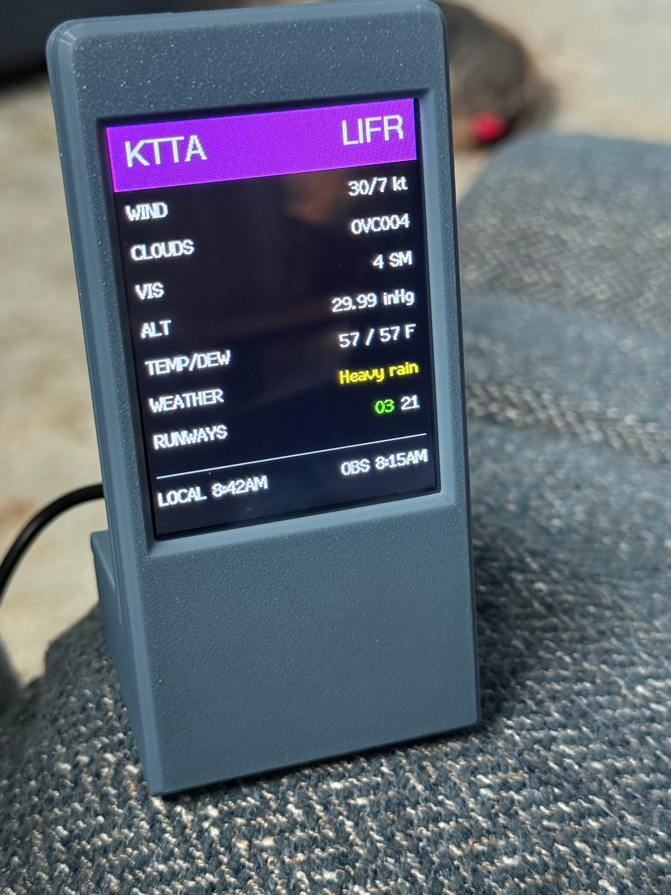

Your personal aviation weather display.
No programming. No soldering. No subscriptions.
Install METAR Mini directly from your browser onto a compatible 2.8-inch Cheap Yellow Display.

Install METAR Mini v4.5
For the ESP32-2432S028R resistive-touch CYD with 4 MB flash. Use desktop Google Chrome or Microsoft Edge and a USB data cable.
- Connect the CYD to your computer.
- Close Arduino IDE serial monitor and any other program using the serial port.
- Click Install METAR Mini, select the USB serial port, and follow the prompts.
- Wait until installation finishes, then restart the device if needed.
Warning: Installation replaces the existing firmware and erases saved settings, including Wi-Fi configuration. Back up anything important first.
After installation
Use the on-screen setup instructions to connect to the METAR Mini configuration network and enter your Wi-Fi and airport settings.
Troubleshooting
No serial port? Try another USB data cable or USB port. Some CYD boards require a USB serial driver appropriate to their USB-to-serial chip. If connection fails, hold BOOT, briefly press RESET (if present), then retry. Release BOOT after connection begins.